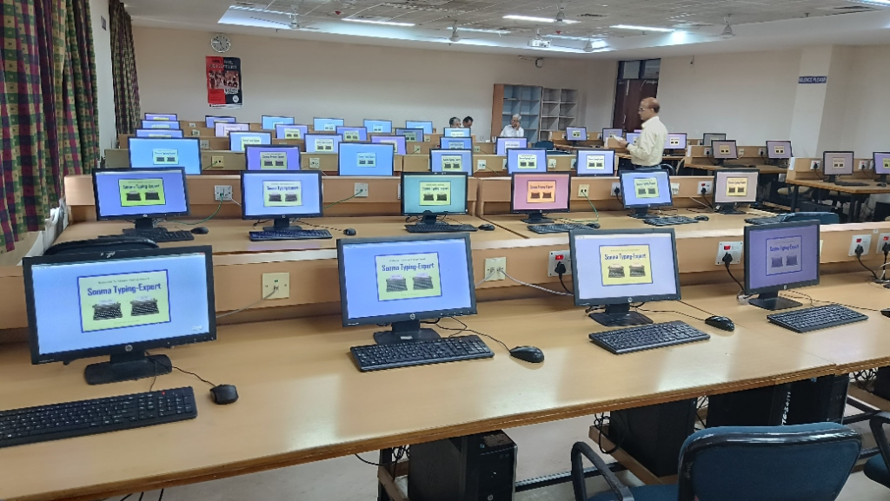
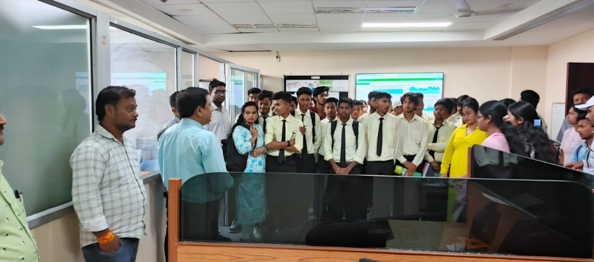

University Computer Lab

The computer labs provides a central computing facility to the students, teachers and staffs of the University for their assignments, projects, dissertation and research related works. In computer lab, printing and scanning facilities are provided. In each of School buildings, there are common computer labs established
Science Building Lab (CCL-2)- Equiped with 30 High-End end Computers (Core i5 & i7) with all licences Software, Antivirus, Gbps internet. Uses: open for all stream students for their academic and research work

Social Science Building Lab (CCL-1): Equiped with 64 High-End Computers (Core i5 & i7) with all licences Software, Antivirus, Gbps internet and good ambience. Uses: open for all stream students for their academic and research work